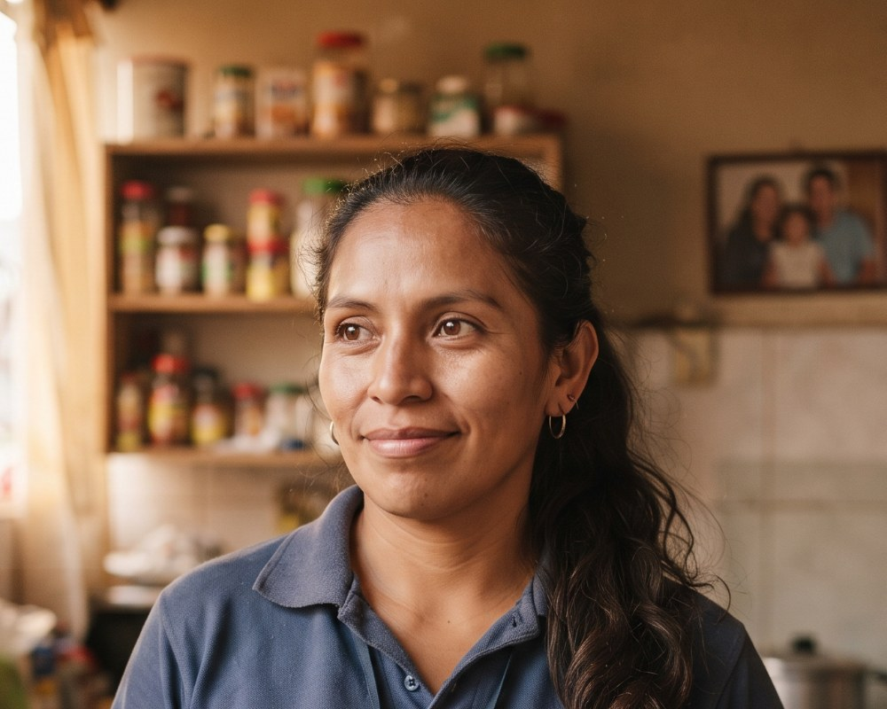

<title>Katherine Ríos Vásquez</title>
<meta name="description" content="Buyer persona interactivo de ANDIBITE: la mamá de la lonchera de 10 minutos.">
<link rel="preconnect" href="https://fonts.googleapis.com">
<link rel="stylesheet" href="https://fonts.googleapis.com/css2?family=Bricolage+Grotesque:opsz,wght@12..96,400;12..96,600;12..96,800&family=Figtree:ital,wght@0,400;0,500;0,600;0,700;1,400&display=swap">
<style>
  :root{
    --bg:#FBF3E4;          /* crema lonchera */
    --bg-2:#F4E7CF;        /* crema más oscura, tarjetas */
    --ink:#2A1A10;         /* chocolate tinta */
    --ink-2:#6B5344;       /* texto secundario */
    --line:#E3D2B4;
    --choc:#4A2C1A;        /* chocolate sólido */
    --choc-2:#6E4529;
    --amber:#F0891F;       /* envoltura naranja */
    --amber-2:#FFB45C;
    --amber-soft:#FFE3BF;
    --mint:#1F9C7C;        /* hierro / salud */
    --mint-soft:#D6F2E7;
    --cherry:#D9453B;      /* señales rojas */
    --cherry-soft:#FADBD7;
    --card:#FFFAF0;
    --shadow:0 18px 40px -22px rgba(42,26,16,.35);
    --radius:22px;
  }
  @media (prefers-color-scheme: dark){
    :root:not([data-theme="light"]){
      --bg:#1E120B; --bg-2:#2A1A10; --ink:#FBF3E4; --ink-2:#CDB79F; --line:#43301F;
      --choc:#F4E7CF; --choc-2:#E3D2B4; --amber:#F59A3A; --amber-2:#F0891F; --amber-soft:#4A2C1A;
      --mint:#3FC49F; --mint-soft:#163A30; --cherry:#F06A5F; --cherry-soft:#4A1F1B; --card:#2A1A10;
      --shadow:0 18px 40px -22px rgba(0,0,0,.7);
    }
  }
  :root[data-theme="dark"]{
    --bg:#1E120B; --bg-2:#2A1A10; --ink:#FBF3E4; --ink-2:#CDB79F; --line:#43301F;
    --choc:#F4E7CF; --choc-2:#E3D2B4; --amber:#F59A3A; --amber-2:#F0891F; --amber-soft:#4A2C1A;
    --mint:#3FC49F; --mint-soft:#163A30; --cherry:#F06A5F; --cherry-soft:#4A1F1B; --card:#2A1A10;
    --shadow:0 18px 40px -22px rgba(0,0,0,.7);
  }

  *{box-sizing:border-box}
  html{scroll-behavior:smooth}
  body{
    margin:0; background:var(--bg); color:var(--ink);
    font-family:"Figtree",system-ui,-apple-system,"Segoe UI",Roboto,sans-serif;
    font-size:16px; line-height:1.55;
    padding-inline:clamp(16px,4vw,48px); padding-block:0 64px;
    -webkit-font-smoothing:antialiased;
  }
  h1,h2,h3{font-family:"Bricolage Grotesque","Figtree",system-ui,sans-serif; text-wrap:balance; margin:0; line-height:1.05}
  h1{font-size:clamp(2.4rem,7vw,5.2rem); font-weight:800; letter-spacing:-.02em}
  h2{font-size:clamp(1.7rem,3.6vw,2.6rem); font-weight:800; letter-spacing:-.015em}
  h3{font-size:1.15rem; font-weight:700}
  p{margin:0}
  a{color:inherit}
  .wrap{max-width:1120px; margin-inline:auto}
  .eyebrow{font-size:.74rem; text-transform:uppercase; letter-spacing:.14em; font-weight:700; color:var(--amber)}
  .muted{color:var(--ink-2)}
  .num{font-variant-numeric:tabular-nums}

  /* ---------- nav ---------- */
  nav{
    position:sticky; top:0; z-index:20; margin-inline:calc(-1 * clamp(16px,4vw,48px));
    padding-inline:clamp(16px,4vw,48px); padding-block:10px;
    background:color-mix(in srgb,var(--bg) 82%,transparent); backdrop-filter:blur(12px);
    border-bottom:1px solid var(--line);
  }
  nav .wrap{display:flex; align-items:center; gap:14px; flex-wrap:wrap}
  .brand{font-family:"Bricolage Grotesque",sans-serif; font-weight:800; letter-spacing:-.01em; display:flex; align-items:center; gap:8px}
  .brand i{width:12px;height:12px;border-radius:50%;background:var(--amber);display:inline-block; box-shadow:0 0 0 4px var(--amber-soft)}
  nav ul{list-style:none; margin:0 0 0 auto; padding:0; display:flex; gap:4px; flex-wrap:wrap}
  nav a{text-decoration:none; font-size:.86rem; font-weight:600; color:var(--ink-2); padding:6px 10px; border-radius:999px}
  nav a:hover, nav a:focus-visible{background:var(--bg-2); color:var(--ink); outline:none}
  nav a.on{background:var(--choc); color:var(--bg)}
  .theme-btn{border:1px solid var(--line); background:var(--card); color:var(--ink); border-radius:999px; padding:6px 12px; font:inherit; font-size:.82rem; font-weight:600; cursor:pointer}

  /* ---------- hero ---------- */
  .hero{
    display:grid; grid-template-columns:minmax(0,1.3fr) minmax(280px,.9fr); gap:32px; align-items:center;
    padding-block:56px 36px;
  }
  .hero .eyebrow{margin-bottom:14px}
  .hero h1 span{display:block}
  .hero h1 .last{color:var(--amber)}
  .tagline{font-size:clamp(1.15rem,2.2vw,1.45rem); margin-top:18px; max-width:34ch; font-weight:500}
  .tagline em{font-style:normal; background:linear-gradient(transparent 55%,var(--amber-soft) 55%); padding:0 3px}
  .chips{display:flex; flex-wrap:wrap; gap:8px; margin-top:24px}
  .chip{
    display:inline-flex; align-items:center; gap:7px; padding:7px 13px; border-radius:999px;
    background:var(--card); border:1px solid var(--line); font-size:.88rem; font-weight:600;
    box-shadow:0 2px 0 var(--line);
  }
  .chip svg{width:16px;height:16px; color:var(--amber)}
  .chip.mint svg{color:var(--mint)}

  .avatar-card{
    position:relative; background:var(--choc); color:var(--bg); border-radius:32px; padding:26px;
    box-shadow:var(--shadow); overflow:hidden; isolation:isolate;
  }
  .avatar-card::before{
    content:""; position:absolute; inset:-40% -20% auto auto; width:75%; aspect-ratio:1; border-radius:50%;
    background:radial-gradient(circle at 30% 30%, var(--amber) 0, transparent 60%); opacity:.55; z-index:-1;
  }
  .avatar-card svg.portrait{width:100%; height:auto; display:block; border-radius:24px; background:color-mix(in srgb,var(--amber) 35%,var(--choc))}
  .avatar-card img.photo{width:100%; aspect-ratio:5/4; object-fit:cover; display:block; border-radius:24px; max-width:100%}
  .avatar-card.has-photo svg.portrait{display:none}
  .avatar-card .swap{position:absolute; left:16px; top:16px; border:0; background:color-mix(in srgb,var(--ink) 55%,transparent); color:#FBF3E4; font:inherit; font-size:.76rem; font-weight:700; padding:7px 11px; border-radius:999px; cursor:pointer; backdrop-filter:blur(6px); letter-spacing:.02em}
  .avatar-card .swap:hover, .avatar-card .swap:focus-visible{background:var(--amber); color:#2A1A10; outline:none}
  .avatar-card img.photo{transition:opacity .35s}
  .avatar-card img.photo.fade{opacity:0}
  .avatar-card{transition:transform .15s ease-out; transform-style:preserve-3d; will-change:transform}
  .progress{position:absolute; left:0; bottom:-1px; height:3px; width:0; background:linear-gradient(90deg,var(--amber),var(--mint)); transition:width .1s linear}
  .avatar-meta{display:grid; grid-template-columns:1fr 1fr; gap:10px 16px; margin-top:18px}
  .avatar-meta div{border-top:1px solid color-mix(in srgb,var(--bg) 25%,transparent); padding-top:8px}
  .avatar-meta small{display:block; font-size:.7rem; text-transform:uppercase; letter-spacing:.12em; opacity:.7}
  .avatar-meta strong{font-size:1rem; font-weight:700}
  .sticker{
    position:absolute; top:16px; right:16px; background:var(--amber); color:#2A1A10; font-family:"Bricolage Grotesque",sans-serif;
    font-weight:800; font-size:.8rem; padding:8px 12px; border-radius:12px; transform:rotate(6deg); letter-spacing:.02em;
    animation:wiggle 4s ease-in-out infinite;
  }
  @keyframes wiggle{0%,100%{transform:rotate(6deg)}50%{transform:rotate(2deg)}}

  /* reveal on load */
  .rise{animation:rise .8s cubic-bezier(.2,.8,.2,1) both}
  .rise.d1{animation-delay:.08s}.rise.d2{animation-delay:.18s}.rise.d3{animation-delay:.28s}
  @keyframes rise{from{opacity:.001; transform:translateY(18px)}to{opacity:1; transform:none}}

  /* ---------- sections ---------- */
  section{padding-block:40px; scroll-margin-top:72px}
  .sec-head{display:flex; align-items:end; justify-content:space-between; gap:16px; flex-wrap:wrap; margin-bottom:22px}
  .sec-head p{max-width:52ch}
  .grid{display:grid; gap:16px}
  .g2{grid-template-columns:repeat(2,minmax(0,1fr))}
  .g3{grid-template-columns:repeat(3,minmax(0,1fr))}
  .card{background:var(--card); border:1px solid var(--line); border-radius:var(--radius); padding:22px}
  .card h3{margin-bottom:8px}

  /* ---------- day timeline ---------- */
  .day{display:grid; grid-template-columns:minmax(220px,.8fr) minmax(0,1.6fr); gap:24px; align-items:start}
  .clock{
    background:var(--choc); color:var(--bg); border-radius:var(--radius); padding:24px; position:sticky; top:84px;
    display:flex; flex-direction:column; align-items:center; gap:12px; text-align:center;
  }
  .clock svg{width:170px; height:170px}
  .clock .ring{fill:none; stroke:color-mix(in srgb,var(--bg) 18%,transparent); stroke-width:10}
  .clock .prog{fill:none; stroke:var(--amber); stroke-width:10; stroke-linecap:round; stroke-dasharray:452; stroke-dashoffset:452; transform:rotate(-90deg); transform-origin:50% 50%; transition:stroke-dashoffset 1.6s cubic-bezier(.2,.8,.2,1)}
  .clock.go .prog{stroke-dashoffset:0}
  .clock .big{font-family:"Bricolage Grotesque",sans-serif; font-size:2.4rem; font-weight:800; line-height:1}
  .clock .big small{font-size:1rem; font-weight:600; opacity:.8}
  .clock p{font-size:.9rem; opacity:.85; max-width:22ch}
  .steps{list-style:none; margin:0 0 0 8px; padding:0 0 0 18px; display:grid; gap:10px; border-left:2px solid var(--line); position:relative}
  .step{
    padding:16px 18px; position:relative;
    background:var(--card); border:1px solid var(--line); border-radius:18px; cursor:pointer;
    transition:transform .25s, border-color .25s, box-shadow .25s;
  }
  .step::before{content:""; position:absolute; left:-25px; top:24px; width:12px; height:12px; border-radius:50%; background:var(--bg); border:3px solid var(--line); transition:border-color .25s, background .25s, transform .25s}
  .step:hover::before, .step.open::before, .step:focus-within::before{border-color:var(--amber); background:var(--amber); transform:scale(1.2)}
  .step:hover, .step:focus-within{transform:translateX(6px); border-color:var(--amber); box-shadow:var(--shadow)}
  .step.open{border-color:var(--amber)}
  .step .chev{position:absolute; right:16px; top:18px; width:18px; height:18px; color:var(--ink-2); transition:transform .3s}
  .step.open .chev{transform:rotate(180deg); color:var(--amber)}
  .step .t{font-family:"Bricolage Grotesque",sans-serif; font-weight:800; font-size:1.05rem; color:var(--amber)}
  .step .t small{display:block; font-family:"Figtree",sans-serif; font-weight:600; font-size:.7rem; text-transform:uppercase; letter-spacing:.1em; color:var(--ink-2)}
  .step p{margin:0}
  .step .more{max-height:0; overflow:hidden; transition:max-height .4s ease, margin .3s; color:var(--ink-2); font-size:.93rem}
  .step.open .more{max-height:160px; margin-top:8px}
  .step button{all:unset; box-sizing:border-box; width:100%; cursor:pointer; display:grid; grid-template-columns:76px 1fr; gap:14px; align-items:start; text-align:left}
  .step button:focus-visible{outline:2px solid var(--amber); outline-offset:6px; border-radius:6px}
  .four-of-five{display:flex; gap:6px; align-items:center; margin-top:14px}
  .four-of-five i{width:26px; height:26px; border-radius:8px; background:var(--amber); display:inline-block}
  .four-of-five i.calm{background:var(--mint)}
  .four-of-five span{margin-left:8px; font-weight:600; font-size:.9rem}

  /* ---------- goals / pains ---------- */
  .goal, .pain{display:flex; gap:14px; align-items:flex-start; padding:16px 0; border-top:1px solid var(--line)}
  .goal:first-of-type,.pain:first-of-type{border-top:0; padding-top:0}
  .dot{flex:0 0 36px; width:36px; height:36px; border-radius:12px; display:grid; place-items:center; font-weight:800; font-family:"Bricolage Grotesque",sans-serif}
  .goal .dot{background:var(--mint-soft); color:var(--mint)}
  .pain .dot{background:var(--cherry-soft); color:var(--cherry)}
  .card.tone-mint{border-color:color-mix(in srgb,var(--mint) 40%,var(--line))}
  .card.tone-cherry{border-color:color-mix(in srgb,var(--cherry) 40%,var(--line))}

  /* ---------- decision ranking ---------- */
  .rank{display:grid; gap:12px}
  .rk{
    display:grid; grid-template-columns:44px 1fr; gap:14px; align-items:center; padding:14px 16px; border-radius:16px;
    background:var(--card); border:1px solid var(--line); cursor:pointer; transition:border-color .2s, transform .2s;
  }
  .rk:hover,.rk.on{border-color:var(--amber); transform:scale(1.01)}
  .rk .n{font-family:"Bricolage Grotesque",sans-serif; font-weight:800; font-size:1.5rem; color:var(--amber); text-align:center}
  .rk .lbl{display:flex; justify-content:space-between; gap:12px; font-weight:700; align-items:baseline}
  .rk .lbl small{font-weight:600; color:var(--ink-2); font-size:.8rem}
  .bar{height:12px; border-radius:999px; background:var(--bg-2); overflow:hidden; margin-top:8px}
  .bar i{display:block; height:100%; width:var(--w); border-radius:999px; background:linear-gradient(90deg,var(--amber),var(--amber-2)); transform-origin:left}
  .rank.animate .bar i{animation:grow 1.1s cubic-bezier(.2,.8,.2,1) both}
  .rank.animate .rk:nth-child(2) .bar i{animation-delay:.1s}.rank.animate .rk:nth-child(3) .bar i{animation-delay:.2s}
  .rank.animate .rk:nth-child(4) .bar i{animation-delay:.3s}.rank.animate .rk:nth-child(5) .bar i{animation-delay:.4s}
  @keyframes grow{from{transform:scaleX(0)}to{transform:scaleX(1)}}
  .rk .why{grid-column:2; color:var(--ink-2); font-size:.92rem; max-height:0; overflow:hidden; transition:max-height .35s}
  .rk.on .why{max-height:120px; margin-top:6px}
  .callout{
    margin-top:18px; padding:18px 22px; border-radius:16px; background:var(--amber-soft); border-left:5px solid var(--amber);
    font-family:"Bricolage Grotesque",sans-serif; font-weight:600; font-size:1.1rem;
  }

  /* ---------- lunchbox test ---------- */
  .test{background:var(--choc); color:var(--bg); border-radius:var(--radius); padding:26px; display:grid; grid-template-columns:minmax(0,1.1fr) minmax(0,.9fr); gap:26px; align-items:start}
  .test h3{color:var(--amber); font-size:1.3rem}
  .test p.muted{color:color-mix(in srgb,var(--bg) 70%,transparent)}
  .toggles{display:grid; gap:10px; margin-top:16px}
  .tg{display:flex; align-items:center; justify-content:space-between; gap:12px; padding:12px 14px; border-radius:14px; background:color-mix(in srgb,var(--bg) 8%,transparent); border:1px solid color-mix(in srgb,var(--bg) 18%,transparent)}
  .tg label{font-weight:600; cursor:pointer; flex:1}
  .tg label small{display:block; font-weight:500; opacity:.7; font-size:.8rem}
  .sw{position:relative; width:50px; height:28px; flex:0 0 auto}
  .sw input{position:absolute; inset:0; opacity:0; margin:0; cursor:pointer; z-index:2; width:100%; height:100%}
  .sw span{position:absolute; inset:0; border-radius:999px; background:color-mix(in srgb,var(--bg) 25%,transparent); transition:background .2s; pointer-events:none}
  .sw input:disabled{cursor:not-allowed}
  .tg:has(input:checked){border-color:color-mix(in srgb,var(--mint) 55%,transparent)}
  .sw span::after{content:""; position:absolute; top:3px; left:3px; width:22px; height:22px; border-radius:50%; background:var(--bg); transition:transform .25s cubic-bezier(.2,.8,.2,1)}
  .sw input:checked + span{background:var(--mint)}
  .sw input:checked + span::after{transform:translateX(22px)}
  .sw input:focus-visible + span{outline:2px solid var(--amber); outline-offset:2px}
  .verdict{border-radius:18px; padding:22px; background:color-mix(in srgb,var(--bg) 10%,transparent); border:1px solid color-mix(in srgb,var(--bg) 18%,transparent); min-height:100%}
  .verdict.pop{animation:pop .45s cubic-bezier(.2,.8,.2,1)}
  @keyframes pop{0%{transform:scale(.97); box-shadow:0 0 0 0 color-mix(in srgb,var(--amber) 50%,transparent)}100%{transform:none; box-shadow:0 0 0 14px transparent}}
  .verdict .st{display:inline-block; padding:6px 12px; border-radius:999px; font-weight:800; font-size:.8rem; letter-spacing:.06em; text-transform:uppercase; margin-bottom:12px; transition:background .3s}
  .verdict .st.ok{background:var(--mint); color:#fff}.verdict .st.no{background:var(--cherry); color:#fff}.verdict .st.mid{background:var(--amber); color:#2A1A10}
  .verdict h4{font-family:"Bricolage Grotesque",sans-serif; font-size:1.5rem; line-height:1.15; margin:0 0 10px; text-wrap:balance}
  .verdict p{opacity:.85}
  .price-row{margin-top:16px}
  .price-row label{font-weight:600; display:flex; justify-content:space-between; gap:10px}
  input[type=range]{width:100%; accent-color:var(--amber); margin-top:8px}
  .price-out{display:flex; gap:14px; margin-top:8px; flex-wrap:wrap; font-size:.9rem}
  .price-out b{font-family:"Bricolage Grotesque",sans-serif; font-size:1.25rem}
  .price-out .pill{padding:4px 10px; border-radius:999px; font-weight:700; font-size:.78rem}
  .pill.ok{background:var(--mint); color:#fff}.pill.no{background:var(--cherry); color:#fff}

  /* ---------- shopping ---------- */
  .shop{display:grid; grid-template-columns:repeat(4,minmax(0,1fr)); gap:14px}
  .shop .card{display:flex; flex-direction:column; gap:10px; transition:transform .2s}
  .shop .card:hover{transform:translateY(-4px)}
  .ico{width:44px; height:44px; border-radius:14px; background:var(--amber-soft); color:var(--amber); display:grid; place-items:center}
  .ico svg{width:24px; height:24px}
  .shop .card strong{font-family:"Bricolage Grotesque",sans-serif; font-size:1.05rem}
  .shop .freq{font-size:.78rem; font-weight:700; text-transform:uppercase; letter-spacing:.1em; color:var(--mint)}
  .stats{display:grid; grid-template-columns:repeat(3,minmax(0,1fr)); gap:14px; margin-top:14px}
  .stat{background:var(--bg-2); border-radius:18px; padding:18px}
  .stat b{display:block; font-family:"Bricolage Grotesque",sans-serif; font-size:clamp(1.5rem,3vw,2.1rem); font-weight:800; letter-spacing:-.02em; line-height:1.05}
  .stat span{color:var(--ink-2); font-size:.88rem}

  /* ---------- influences ---------- */
  .inf{display:grid; grid-template-columns:repeat(4,minmax(0,1fr)); gap:14px}
  .inf .card{position:relative; overflow:hidden; transition:transform .2s, border-color .2s}
  .inf .card:hover{transform:translateY(-4px); border-color:var(--amber)}
  .inf .ico{margin-bottom:12px}
  .stat{transition:transform .2s}
  .stat:hover{transform:translateY(-3px)}
  .chips .chip{animation:rise .6s cubic-bezier(.2,.8,.2,1) both}
  .chips .chip:nth-child(2){animation-delay:.35s}.chips .chip:nth-child(3){animation-delay:.42s}.chips .chip:nth-child(4){animation-delay:.49s}.chips .chip:nth-child(5){animation-delay:.56s}.chips .chip:nth-child(6){animation-delay:.63s}
  .rank-note{font-size:.82rem; color:var(--ink-2); margin-top:10px}
  @media print{
    nav, .qnav, .theme-btn, .progress, .swap{display:none !important}
    body{padding:0; background:#fff; color:#2A1A10}
    section{padding-block:18px; break-inside:avoid}
    .io.pre, .io{opacity:1 !important; transform:none !important; transition:none !important}
    .rise, .chips .chip{animation:none !important; opacity:1 !important}
    .rank .bar i{animation:none !important; transform:none !important}
    .clock .prog{stroke-dashoffset:0 !important}
    .q{position:relative !important; opacity:1 !important; transform:none !important; margin-bottom:10px; pointer-events:auto}
    .avatar-card{transform:none !important; box-shadow:none}
    .test, .fit, .day{grid-template-columns:1fr}
    .g2, .g3, .shop, .inf, .flags, .stats{grid-template-columns:repeat(2,minmax(0,1fr))}
    .clock{position:static}
    .step .more{max-height:none !important}
    .rk .why{max-height:none !important; margin-top:6px}
    .quotes{min-height:0}
    .step .more, .rk .why{max-height:none; margin-top:6px}
  }
  .inf .w{display:inline-block; margin-bottom:12px; font-size:.72rem; font-weight:800; letter-spacing:.08em; text-transform:uppercase; padding:4px 9px; border-radius:999px; background:var(--bg-2); color:var(--ink-2)}
  .inf .w.hi{background:var(--amber-soft); color:var(--amber)}
  .inf .card{display:flex; flex-direction:column; align-items:flex-start}
  .inf .card p{align-self:stretch}

  /* ---------- quotes ---------- */
  .quotes{position:relative; min-height:200px}
  .q{
    position:absolute; inset:0; display:flex; flex-direction:column; justify-content:center; gap:14px; padding:30px;
    background:var(--card); border:1px solid var(--line); border-radius:var(--radius); opacity:0; transform:translateY(10px) scale(.98);
    transition:opacity .5s, transform .5s; pointer-events:none;
  }
  .q.on{opacity:1; transform:none; pointer-events:auto; position:relative}
  .q blockquote{margin:0; font-family:"Bricolage Grotesque",sans-serif; font-size:clamp(1.4rem,3vw,2.1rem); font-weight:600; line-height:1.2; text-wrap:balance}
  .q blockquote::before{content:"“"; color:var(--amber); font-size:1.4em; line-height:0; margin-right:2px}
  .q .lesson{display:flex; gap:10px; align-items:flex-start; color:var(--ink-2); font-size:.95rem}
  .q .lesson b{color:var(--mint)}
  .qnav{display:flex; gap:8px; margin-top:14px; align-items:center}
  .qnav button{border:1px solid var(--line); background:var(--card); color:var(--ink); width:38px; height:38px; border-radius:50%; cursor:pointer; font-size:1.1rem}
  .qnav button:hover{border-color:var(--amber)}
  .qnav .dots{display:flex; gap:6px; margin-left:6px}
  .qnav .dots i{width:8px; height:8px; border-radius:50%; background:var(--line)}
  .qnav .dots i.on{background:var(--amber); width:22px; border-radius:999px}

  /* ---------- red flags ---------- */
  .flags{display:grid; grid-template-columns:repeat(3,minmax(0,1fr)); gap:14px}
  .flag{background:var(--cherry-soft); border-radius:18px; padding:20px; display:flex; gap:12px; align-items:flex-start}
  .flag svg{flex:0 0 26px; width:26px; height:26px; color:var(--cherry)}
  .flag strong{display:block; font-family:"Bricolage Grotesque",sans-serif; font-size:1.05rem; margin-bottom:4px}
  .flag p{font-size:.92rem; color:var(--ink-2)}

  /* ---------- fit ---------- */
  .fit{
    background:linear-gradient(135deg,var(--choc) 0%,var(--choc-2) 100%); color:var(--bg); border-radius:28px; padding:34px;
    display:grid; grid-template-columns:minmax(0,1fr) minmax(0,1fr); gap:28px; position:relative; overflow:hidden;
  }
  .fit::after{content:""; position:absolute; right:-80px; bottom:-120px; width:320px; aspect-ratio:1; border-radius:50%; background:var(--amber); opacity:.25; filter:blur(20px)}
  .fit h2{color:var(--bg)}
  .fit .eyebrow{color:var(--amber-2)}
  .fit .msg{font-family:"Bricolage Grotesque",sans-serif; font-size:clamp(1.5rem,3.3vw,2.4rem); font-weight:800; line-height:1.1; margin-top:14px}
  .fit .msg em{font-style:normal; color:var(--amber-2)}
  .match{list-style:none; margin:0; padding:0; display:grid; gap:10px; position:relative; z-index:1}
  .match li{display:grid; grid-template-columns:1fr 24px 1fr; gap:10px; align-items:center; padding:12px 14px; border-radius:14px; background:color-mix(in srgb,var(--bg) 10%,transparent); border:1px solid color-mix(in srgb,var(--bg) 16%,transparent); font-size:.93rem}
  .match li span:first-child{opacity:.8}
  .match li svg{width:20px; height:20px; color:var(--mint)}
  .match li b{font-weight:700}
  .fit .not{margin-top:16px; font-size:.9rem; opacity:.8}

  .not-card{margin-top:16px; border:1px dashed var(--line); border-radius:18px; padding:18px 22px; display:flex; gap:14px; align-items:flex-start; flex-wrap:wrap}
  .not-card strong{font-family:"Bricolage Grotesque",sans-serif}
  .not-card ul{margin:6px 0 0; padding-left:18px; color:var(--ink-2); font-size:.93rem}

  footer{border-top:1px solid var(--line); margin-top:30px; padding-top:20px; font-size:.85rem; color:var(--ink-2); display:flex; gap:16px; flex-wrap:wrap; justify-content:space-between}

  /* ---------- scroll reveal (rest state visible) ---------- */
  .io{transition:transform .7s cubic-bezier(.2,.8,.2,1), opacity .7s}
  .io.pre{opacity:.0001; transform:translateY(22px)}

  @media (max-width:900px){
    .hero{grid-template-columns:1fr; padding-block:36px 24px}
    .g3,.shop,.inf,.flags{grid-template-columns:repeat(2,minmax(0,1fr))}
    .test,.fit,.day{grid-template-columns:1fr}
    .clock{position:static}
  }
  @media (max-width:600px){
    .g2,.g3,.shop,.inf,.flags,.stats{grid-template-columns:1fr}
    .step button{grid-template-columns:64px 1fr}
    nav ul{display:none}
    .match li{grid-template-columns:1fr; text-align:left}
    .match li svg{transform:rotate(90deg)}
  }
  @media (prefers-reduced-motion:reduce){
    *,*::before,*::after{animation:none !important; transition:none !important}
    .io.pre{opacity:1; transform:none}
    .clock .prog{stroke-dashoffset:0}
  }
</style>

<nav>
  <div class="wrap">
    <div class="brand"><i></i>ANDIBITE · Buyer persona</div>
    <ul>
      <li><a href="#dia">Su día</a></li>
      <li><a href="#metas">Metas y frustraciones</a></li>
      <li><a href="#decision">Cómo decide</a></li>
      <li><a href="#test">Test de lonchera</a></li>
      <li><a href="#compra">Dónde compra</a></li>
      <li><a href="#voces">Voces</a></li>
      <li><a href="#fit">Por qué ANDIBITE</a></li>
    </ul>
    <button class="theme-btn" id="printBtn" type="button" aria-label="Imprimir o guardar como PDF">⎙ PDF</button>
    <button class="theme-btn" id="themeBtn" type="button" aria-label="Cambiar tema">☾ Tema</button>
  </div>
  <div class="progress" id="progress" aria-hidden="true"></div>
</nav>

<main class="wrap">

  <!-- ================= HERO ================= -->
  <header class="hero">
    <div>
      <p class="eyebrow rise">Buyer persona · Lonchera escolar · Lima Norte</p>
      <h1 class="rise d1"><span>Katherine</span><span class="last">Ríos Vásquez</span></h1>
      <p class="tagline rise d2">La mamá de la <em>lonchera de 10 minutos</em>: quiere que su hijo coma bien sin tener que elegir entre dormir y cocinar.</p>
      <div class="chips rise d3">
        <span class="chip"><svg viewBox="0 0 24 24" fill="none" stroke="currentColor" stroke-width="2"><circle cx="12" cy="8" r="4"/><path d="M4 21c0-4 4-6 8-6s8 2 8 6"/></svg>34 años</span>
        <span class="chip"><svg viewBox="0 0 24 24" fill="none" stroke="currentColor" stroke-width="2"><path d="M12 22s7-7 7-12a7 7 0 0 0-14 0c0 5 7 12 7 12z"/><circle cx="12" cy="10" r="2.5"/></svg>Los Olivos, Lima Norte</span>
        <span class="chip"><svg viewBox="0 0 24 24" fill="none" stroke="currentColor" stroke-width="2"><rect x="3" y="7" width="18" height="13" rx="2"/><path d="M8 7V5a4 4 0 0 1 8 0v2"/></svg>Cajera en Mega Plaza · turno rotativo</span>
        <span class="chip"><svg viewBox="0 0 24 24" fill="none" stroke="currentColor" stroke-width="2"><path d="M4 19V6a2 2 0 0 1 2-2h12a2 2 0 0 1 2 2v13"/><path d="M4 19h16M9 8h6M9 12h6"/></svg>Técnico en administración los sábados</span>
        <span class="chip mint"><svg viewBox="0 0 24 24" fill="none" stroke="currentColor" stroke-width="2"><circle cx="9" cy="8" r="3"/><circle cx="17" cy="10" r="2.5"/><path d="M3 20c0-3 3-5 6-5s6 2 6 5M13 20c0-2 2-4 4-4s4 2 4 4"/></svg>Hijo: Adriano, 7 años, 2° grado</span>
        <span class="chip"><svg viewBox="0 0 24 24" fill="none" stroke="currentColor" stroke-width="2"><path d="M3 11l9-7 9 7v9a1 1 0 0 1-1 1h-5v-6H9v6H4a1 1 0 0 1-1-1z"/></svg>Vive con su pareja, su hijo y su mamá</span>
      </div>
    </div>

    <div class="avatar-card rise d2" id="avatarCard">
      <div class="sticker">NSE C</div>
      
      <button class="swap" id="swapBtn" type="button" hidden aria-label="Cambiar entre foto e ilustración">Ver ilustración</button>
      <svg class="portrait" viewBox="0 0 400 320" role="img" aria-label="Ilustración de Katherine">
        <defs>
          <linearGradient id="hair" x1="0" x2="1"><stop offset="0" stop-color="#2A1A10"/><stop offset="1" stop-color="#4A2C1A"/></linearGradient>
        </defs>
        <circle cx="200" cy="330" r="150" fill="#F0891F" opacity=".9"/>
        <path d="M120 330 Q200 230 280 330 Z" fill="#FBF3E4"/>
        <rect x="150" y="215" width="100" height="70" rx="30" fill="#E0A77A"/>
        <ellipse cx="200" cy="150" rx="78" ry="90" fill="#E8B48A"/>
        <path d="M122 150 C118 62 282 62 278 150 L278 138 C270 118 240 108 200 108 C160 108 130 118 122 138 Z" fill="url(#hair)"/>
        <path d="M122 150 C122 200 130 240 118 262 C150 250 150 190 150 150 Z" fill="url(#hair)"/>
        <path d="M278 150 C278 200 270 240 282 262 C250 250 250 190 250 150 Z" fill="url(#hair)"/>
        <circle cx="172" cy="155" r="6" fill="#2A1A10"/><circle cx="228" cy="155" r="6" fill="#2A1A10"/>
        <path d="M160 140 q12 -8 24 0M216 140 q12 -8 24 0" stroke="#2A1A10" stroke-width="3" fill="none" stroke-linecap="round"/>
        <path d="M182 195 q18 14 36 0" stroke="#8A4B2E" stroke-width="4" fill="none" stroke-linecap="round"/>
        <circle cx="150" cy="180" r="9" fill="#F0891F" opacity=".5"/><circle cx="250" cy="180" r="9" fill="#F0891F" opacity=".5"/>
        <g transform="translate(300 40)">
          <rect x="0" y="12" width="70" height="44" rx="10" fill="#FBF3E4"/>
          <rect x="18" y="4" width="34" height="14" rx="6" fill="#FBF3E4"/>
          <rect x="10" y="26" width="50" height="8" rx="4" fill="#F0891F"/>
          <rect x="10" y="40" width="30" height="6" rx="3" fill="#1F9C7C"/>
        </g>
      </svg>
      <div class="avatar-meta">
        <div><small>Familia</small><strong>Conviviente · pareja conductor</strong></div>
        <div><small>Apoyo en casa</small><strong>Su mamá, a veces</strong></div>
        <div><small>Comida por semana</small><strong class="num">S/200 – S/300</strong></div>
        <div><small>Colegio de Adriano</small><strong>Estatal, en la zona</strong></div>
      </div>
    </div>
  </header>

  <!-- ================= DÍA ================= -->
  <section id="dia">
    <div class="sec-head io pre">
      <div>
        <p class="eyebrow">Un día cualquiera</p>
        <h2>Diez minutos reales para la lonchera</h2>
      </div>
      <p class="muted">Toca cada momento para ver lo que pasa por su cabeza. La noche anterior siempre planea algo mejor; la mañana decide otra cosa.</p>
    </div>
    <div class="day">
      <div class="clock io pre" id="clock">
        <svg viewBox="0 0 160 160" aria-hidden="true">
          <circle class="ring" cx="80" cy="80" r="72"/>
          <circle class="prog" cx="80" cy="80" r="72"/>
          <text x="80" y="74" text-anchor="middle" font-family="Bricolage Grotesque, sans-serif" font-weight="800" font-size="40" fill="currentColor">10</text>
          <text x="80" y="98" text-anchor="middle" font-family="Figtree, sans-serif" font-weight="600" font-size="13" fill="currentColor" opacity=".8">MINUTOS</text>
        </svg>
        <div class="big">6:00 <small>a.m.</small></div>
        <p>Se levanta ya cansada. Mientras alista a Adriano y se alista ella, la lonchera se resuelve con lo primero que hay en la alacena.</p>
        <div class="four-of-five" aria-label="Cuatro de cinco días son así">
          <i></i><i></i><i></i><i></i><i class="calm"></i><span>4 de 5 días son así</span>
        </div>
      </div>

      <ol class="steps">
        <li class="step io pre"><button type="button" aria-expanded="false"><svg class="chev" viewBox="0 0 24 24" fill="none" stroke="currentColor" stroke-width="2.5" aria-hidden="true"><path d="M6 9l6 6 6-6"/></svg>
          <div class="t">Noche<small>antes</small></div>
          <div><p>Se duerme pensando: «mañana le pico fruta fresca».</p><div class="more">La intención existe. Lo que falta no es voluntad, es tiempo y energía a las 6 de la mañana.</div></div>
        </button></li>
        <li class="step io pre"><button type="button" aria-expanded="false"><svg class="chev" viewBox="0 0 24 24" fill="none" stroke="currentColor" stroke-width="2.5" aria-hidden="true"><path d="M6 9l6 6 6-6"/></svg>
          <div class="t">6:00<small>a.m.</small></div>
          <div><p>Se levanta cansada. Diez minutos reales para la lonchera mientras alista a Adriano y se alista ella.</p><div class="more">Termina agarrando lo primero que hay en la alacena. Aquí se decide qué entra a la mochila.</div></div>
        </button></li>
        <li class="step io pre"><button type="button" aria-expanded="false"><svg class="chev" viewBox="0 0 24 24" fill="none" stroke="currentColor" stroke-width="2.5" aria-hidden="true"><path d="M6 9l6 6 6-6"/></svg>
          <div class="t">Mañana<small>paradero</small></div>
          <div><p>Sale corriendo al paradero. Compra al paso, antes de tomar el carro.</p><div class="more">La bodega de la esquina es su punto de compra diario. Lo que no está ahí, no existe para esa mañana.</div></div>
        </button></li>
        <li class="step io pre"><button type="button" aria-expanded="false"><svg class="chev" viewBox="0 0 24 24" fill="none" stroke="currentColor" stroke-width="2.5" aria-hidden="true"><path d="M6 9l6 6 6-6"/></svg>
          <div class="t">Día<small>en tienda</small></div>
          <div><p>Trabaja de pie todo el día en la tienda de Mega Plaza, con turno rotativo.</p><div class="more">Sin tiempo ni cabeza para pensar en la comida del niño hasta que vuelve a casa.</div></div>
        </button></li>
        <li class="step io pre"><button type="button" aria-expanded="false"><svg class="chev" viewBox="0 0 24 24" fill="none" stroke="currentColor" stroke-width="2.5" aria-hidden="true"><path d="M6 9l6 6 6-6"/></svg>
          <div class="t">Tarde<small>la mochila</small></div>
          <div><p>Recién abre la mochila para ver si la lonchera volvió vacía o intacta.</p><div class="more">Si vuelve completa: el niño estuvo horas sin comer y se botó dinero. Es el momento donde se juega la culpa.</div></div>
        </button></li>
      </ol>
    </div>
  </section>

  <!-- ================= METAS / FRUSTRACIONES ================= -->
  <section id="metas">
    <div class="sec-head io pre">
      <div>
        <p class="eyebrow">Lo que busca y lo que le duele</p>
        <h2>Comer bien sin elegir entre dormir y cocinar</h2>
      </div>
    </div>
    <div class="grid g2">
      <div class="card tone-mint io pre">
        <p class="eyebrow" style="color:var(--mint)">Qué quiere lograr</p>
        <h3 style="margin-bottom:14px">Sus metas</h3>
        <div class="goal"><div class="dot">1</div><div><strong>Que su hijo coma bien</strong><p class="muted">Sin que ella tenga que elegir entre dormir y cocinar.</p></div></div>
        <div class="goal"><div class="dot">2</div><div><strong>Dejar de sentir que falla como madre</strong><p class="muted">La lonchera es donde más se le nota, y donde más la juzgan.</p></div></div>
        <div class="goal"><div class="dot">3</div><div><strong>Que la plata en comida no termine en el tacho</strong><p class="muted">Cada lonchera intacta es dinero botado de un presupuesto ajustado.</p></div></div>
      </div>
      <div class="card tone-cherry io pre">
        <p class="eyebrow" style="color:var(--cherry)">Qué la frustra</p>
        <h3 style="margin-bottom:14px">Sus dolores</h3>
        <div class="pain"><div class="dot">!</div><div><strong>La lonchera regresa completa</strong><p class="muted">Significa horas sin comer y dinero perdido.</p></div></div>
        <div class="pain"><div class="dot">!</div><div><strong>La culpa de mandar procesados</strong><p class="muted">Y que se lo hagan notar: una nota de la auxiliar en la agenda, o su mamá diciendo que antes se cocinaba más natural.</p></div></div>
        <div class="pain"><div class="dot">!</div><div><strong>Lo que prepara con esfuerzo se malogra</strong><p class="muted">Se aplasta, se oscurece o se pasa antes del recreo.</p></div></div>
        <div class="pain"><div class="dot">!</div><div><strong>Quedarse sin ideas a mitad de semana</strong><p class="muted">Las recetas de TikTok que toman más de diez minutos las abandona.</p></div></div>
      </div>
    </div>
  </section>

  <!-- ================= DECISIÓN ================= -->
  <section id="decision">
    <div class="sec-head io pre">
      <div>
        <p class="eyebrow">Su orden de decisión</p>
        <h2>Primero el niño, después todo lo demás</h2>
      </div>
      <p class="muted">El orden importa. Toca cada criterio para ver por qué está donde está.</p>
    </div>
    <div class="rank io pre" id="rank">
      <div class="rk" tabindex="0" style="--w:100%"><div class="n">1</div><div><div class="lbl">Aceptación del niño <small>Si Adriano lo rechaza, no existe</small></div><div class="bar"><i></i></div></div><div class="why">Ya la decepcionaron productos saludables que el niño rechazó. Por eso no experimenta sin red: si prueba algo nuevo, manda además algo que ya sabe que come.</div></div>
      <div class="rk" tabindex="0" style="--w:84%"><div class="n">2</div><div><div class="lbl">Practicidad <small>Se abre y se come</small></div><div class="bar"><i></i></div></div><div class="why">Sin prender la cocina, sin refrigerar, sin preparar. Tiene diez minutos y ya está cansada.</div></div>
      <div class="rk" tabindex="0" style="--w:68%"><div class="n">3</div><div><div class="lbl">Precio <small class="num">S/3.50 – S/5 por porción</small></div><div class="bar"><i></i></div></div><div class="why">Más que eso se le sale del presupuesto, porque se multiplica por cinco días.</div></div>
      <div class="rk" tabindex="0" style="--w:52%"><div class="n">4</div><div><div class="lbl">Aporte nutricional <small>Sobre todo hierro</small></div><div class="bar"><i></i></div></div><div class="why">La anemia es lo primero que asocia con «alimentación infantil». Quiere la tranquilidad de estar aportando algo real. Que sea peruano suma, pero no manda la decisión.</div></div>
      <div class="rk" tabindex="0" style="--w:36%"><div class="n">5</div><div><div class="lbl">Resistencia del empaque <small>Que llegue entero al recreo</small></div><div class="bar"><i></i></div></div><div class="why">Lo que se aplasta, se oscurece o se malogra antes del recreo vuelve intacto en la mochila.</div></div>
    </div>
    <p class="rank-note io pre">El largo de cada barra muestra el orden de prioridad que ella describe, no un peso medido.</p>
    <div class="callout io pre">Si el producto es nutritivo pero el niño lo rechaza, para ella no existe.</div>
  </section>

  <!-- ================= TEST ================= -->
  <section id="test">
    <div class="sec-head io pre">
      <div>
        <p class="eyebrow">Herramienta</p>
        <h2>¿Pasa el test de la lonchera de Katherine?</h2>
      </div>
      <p class="muted">Evalúa un producto o una idea con sus propios criterios, en su propio orden. El veredicto usa la lógica que ella describe.</p>
    </div>
    <div class="test io pre">
      <div>
        <h3>Marca lo que cumple el producto</h3>
        <p class="muted">Los criterios están en el orden en que ella decide.</p>
        <div class="toggles">
          <div class="tg"><label for="c1">1 · Adriano lo acepta<small>Se lo come sin negociar y no le da vergüenza frente a sus amigos.</small></label><span class="sw"><input type="checkbox" id="c1" checked><span></span></span></div>
          <div class="tg"><label for="c2">2 · Se abre y se come<small>Sin prender la cocina, sin refrigerar.</small></label><span class="sw"><input type="checkbox" id="c2" checked><span></span></span></div>
          <div class="tg"><label for="c3">3 · Precio por porción<small>Ajusta el precio y mira cuánto suma en la semana.</small></label><span class="sw"><input type="checkbox" id="c3" checked disabled><span></span></span></div>
          <div class="tg"><label for="c4">4 · Aporta hierro de verdad<small>Es lo primero que asocia con alimentación infantil.</small></label><span class="sw"><input type="checkbox" id="c4" checked><span></span></span></div>
          <div class="tg"><label for="c5">5 · Empaque que resiste<small>Llega entero al recreo.</small></label><span class="sw"><input type="checkbox" id="c5" checked><span></span></span></div>
        </div>
        <div class="price-row">
          <label for="price"><span>Precio por porción</span><b class="num" id="priceLbl">S/4.00</b></label>
          <input type="range" id="price" min="2" max="8" step="0.25" value="4">
          <div class="price-out">
            <div>× 5 días = <b class="num" id="weekLbl">S/20.00</b> por semana</div>
            <span class="pill ok" id="pricePill">Dentro de su rango</span>
          </div>
        </div>
      </div>
      <div class="verdict" id="verdict" aria-live="polite">
        <span class="st ok" id="vst">Le calza</span>
        <h4 id="vtitle">Nutritivo de verdad, pero él cree que es chocolate.</h4>
        <p id="vtext">Cumple sus cinco criterios en su orden. Lo compraría al paso en la bodega y, si le sale más barato, en pack semanal.</p>
      </div>
    </div>
  </section>

  <!-- ================= COMPRA ================= -->
  <section id="compra">
    <div class="sec-head io pre">
      <div>
        <p class="eyebrow">Dónde y cómo compra</p>
        <h2>Compra en trayecto, al paso</h2>
      </div>
      <p class="muted">Tres canales con roles distintos. La decisión de lonchera se toma en la bodega, camino al paradero.</p>
    </div>
    <div class="shop">
      <div class="card io pre"><div class="ico"><svg viewBox="0 0 24 24" fill="none" stroke="currentColor" stroke-width="2"><path d="M3 9l1-5h16l1 5"/><path d="M3 9a3 3 0 0 0 6 0 3 3 0 0 0 6 0 3 3 0 0 0 6 0"/><path d="M5 11v9h14v-9"/><path d="M10 20v-5h4v5"/></svg></div><span class="freq">Domingos</span><strong>Mercado del barrio</strong><p class="muted">Verduras y carnes para la semana.</p></div>
      <div class="card io pre"><div class="ico"><svg viewBox="0 0 24 24" fill="none" stroke="currentColor" stroke-width="2"><rect x="3" y="8" width="18" height="12" rx="2"/><path d="M3 8l2-4h14l2 4M9 20v-6h6v6"/></svg></div><span class="freq">Día a día</span><strong>Bodega de la esquina</strong><p class="muted">Aquí se compra la lonchera, de pasada, antes de tomar el carro.</p></div>
      <div class="card io pre"><div class="ico"><svg viewBox="0 0 24 24" fill="none" stroke="currentColor" stroke-width="2"><circle cx="9" cy="20" r="1.5"/><circle cx="17" cy="20" r="1.5"/><path d="M2 3h3l2.5 12h11l2-8H6"/></svg></div><span class="freq">1 – 2 veces al mes</span><strong>Supermercado</strong><p class="muted">Como máximo. No es donde vive su decisión.</p></div>
      <div class="card io pre"><div class="ico"><svg viewBox="0 0 24 24" fill="none" stroke="currentColor" stroke-width="2"><rect x="3" y="6" width="18" height="14" rx="3"/><path d="M8 6V4h8v2M3 12h18"/></svg></div><span class="freq">Oportunidad</span><strong>Pack semanal</strong><p class="muted">Le interesa, si le sale más barato que comprar suelto.</p></div>
    </div>
    <div class="stats io pre">
      <div class="stat"><b class="num">S/3.50 – S/5</b><span>por porción diaria de lonchera</span></div>
      <div class="stat"><b class="num">× 5 días</b><span>así multiplica cualquier precio antes de decidir</span></div>
      <div class="stat"><b class="num">S/200 – S/300</b><span>presupuesto semanal de comida del hogar</span></div>
    </div>
  </section>

  <!-- ================= INFLUENCIAS ================= -->
  <section id="voces">
    <div class="sec-head io pre">
      <div>
        <p class="eyebrow">A quién le hace caso</p>
        <h2>Las voces alrededor de la lonchera</h2>
      </div>
    </div>
    <div class="inf">
      <div class="card io pre"><span class="w hi">Pesa más de lo que admite</span><div class="ico"><svg viewBox="0 0 24 24" fill="none" stroke="currentColor" stroke-width="2"><path d="M4 19V6a2 2 0 0 1 2-2h12a2 2 0 0 1 2 2v13"/><path d="M4 19h16M9 9h6M9 13h4"/></svg></div><h3>La profesora</h3><p class="muted">Una nota en la agenda de la auxiliar es una de las cosas que más le duele.</p></div>
      <div class="card io pre"><span class="w hi">Juzgan</span><div class="ico"><svg viewBox="0 0 24 24" fill="none" stroke="currentColor" stroke-width="2"><circle cx="8" cy="8" r="3"/><circle cx="16" cy="8" r="3"/><path d="M2 20c0-3 3-5 6-5s6 2 6 5M10 20c0-3 3-5 6-5s6 2 6 5"/></svg></div><h3>Su mamá y su suegra</h3><p class="muted">Opinan sobre lo que manda y la hacen sentir juzgada.</p></div>
      <div class="card io pre"><span class="w hi">Compara</span><div class="ico"><svg viewBox="0 0 24 24" fill="none" stroke="currentColor" stroke-width="2"><rect x="3" y="7" width="18" height="13" rx="3"/><path d="M8 7V5h8v2M3 12h18M12 12v8"/></svg></div><h3>Los compañeros de Adriano</h3><p class="muted">El niño intercambia lonchera en el recreo; ella mira qué llevan los demás.</p></div>
      <div class="card io pre"><span class="w">Ideas</span><div class="ico"><svg viewBox="0 0 24 24" fill="none" stroke="currentColor" stroke-width="2"><rect x="6" y="2" width="12" height="20" rx="3"/><path d="M10 18h4"/><path d="M10 9l5 3-5 3z" fill="currentColor" stroke="none"/></svg></div><h3>TikTok</h3><p class="muted">Para recetas. Abandona las que toman más de diez minutos.</p></div>
    </div>

    <div class="sec-head io pre" style="margin-top:36px">
      <div>
        <p class="eyebrow">Sus objeciones, en sus palabras</p>
        <h2>Ya la decepcionaron antes</h2>
      </div>
      <p class="muted">Por eso no experimenta sin red: si prueba algo nuevo, manda además algo que ya sabe que come.</p>
    </div>
    <div class="quotes io pre" id="quotes">
      <div class="q on"><blockquote>Compré galletas sin azúcar una vez y parecían cartón.</blockquote><div class="lesson"><b>Lección</b><span>«Saludable» ya le suena a sacrificio de sabor. El producto tiene que gustar primero.</span></div></div>
      <div class="q"><blockquote>Si dice integral igual tiene azúcar, no entiendo las etiquetas.</blockquote><div class="lesson"><b>Lección</b><span>Las etiquetas no la convencen. Necesita un mensaje simple y una promesa concreta, como el hierro.</span></div></div>
      <div class="q"><blockquote>Le hice nuggets de sangrecita y ni los tocó.</blockquote><div class="lesson"><b>Lección</b><span>El hierro en formato salado ya fracasó en casa. Los nuggets «parecían carbón» y le dio vergüenza frente a sus amigos.</span></div></div>
    </div>
    <div class="qnav io pre">
      <button type="button" id="qPrev" aria-label="Frase anterior">‹</button>
      <button type="button" id="qNext" aria-label="Frase siguiente">›</button>
      <div class="dots" id="qDots"><i class="on"></i><i></i><i></i></div>
    </div>

    <div class="sec-head io pre" style="margin-top:36px">
      <div>
        <p class="eyebrow">Señales rojas</p>
        <h2>Qué la haría dejar de comprar</h2>
      </div>
    </div>
    <div class="flags">
      <div class="flag io pre"><svg viewBox="0 0 24 24" fill="none" stroke="currentColor" stroke-width="2"><path d="M12 3v18M6 8l6-5 6 5"/></svg><div><strong>Que suba de precio</strong><p>Cualquier alza se multiplica por cinco días.</p></div></div>
      <div class="flag io pre"><svg viewBox="0 0 24 24" fill="none" stroke="currentColor" stroke-width="2"><path d="M5 12h14M12 5v14" transform="rotate(45 12 12)"/></svg><div><strong>Dos «no me gusta» seguidos</strong><p>Si Adriano lo dice dos veces, se acabó.</p></div></div>
      <div class="flag io pre"><svg viewBox="0 0 24 24" fill="none" stroke="currentColor" stroke-width="2"><circle cx="12" cy="12" r="9"/><path d="M8 15s1.5-2 4-2 4 2 4 2M9 9h.01M15 9h.01"/></svg><div><strong>Vergüenza frente a sus amigos</strong><p>Fue lo que pasó con los nuggets caseros que «parecían carbón».</p></div></div>
    </div>
  </section>

  <!-- ================= FIT ================= -->
  <section id="fit">
    <div class="fit io pre">
      <div>
        <p class="eyebrow">Por qué ANDIBITE le calza</p>
        <h2>Cada criterio suyo, resuelto</h2>
        <p class="msg">El mensaje que la mueve no es «snack saludable». Es <em>«nutritivo de verdad, pero él cree que es chocolate»</em>.</p>
        <p class="not">Si le hablas a la mamá que hace figuras con verduras o compra orgánico en supermercado, pierdes a Katherine.</p>
      </div>
      <ul class="match">
        <li><span>Lo único que Adriano no negocia</span><svg viewBox="0 0 24 24" fill="none" stroke="currentColor" stroke-width="2.5"><path d="M5 12h14M13 6l6 6-6 6"/></svg><b>Parece una golosina de chocolate</b></li>
        <li><span>Diez minutos y ya cansada</span><svg viewBox="0 0 24 24" fill="none" stroke="currentColor" stroke-width="2.5"><path d="M5 12h14M13 6l6 6-6 6"/></svg><b>Se abre y se come, sin preparar ni refrigerar</b></li>
        <li><span>S/3.50 a S/5, por cinco días</span><svg viewBox="0 0 24 24" fill="none" stroke="currentColor" stroke-width="2.5"><path d="M5 12h14M13 6l6 6-6 6"/></svg><b>Entra en su rango de precio</b></li>
        <li><span>Anemia es su primera preocupación</span><svg viewBox="0 0 24 24" fill="none" stroke="currentColor" stroke-width="2.5"><path d="M5 12h14M13 6l6 6-6 6"/></svg><b>Lleva hierro escondido, que el niño rechaza en formato salado</b></li>
      </ul>
    </div>

    <div class="not-card io pre">
      <div><strong>Quién no es Katherine</strong>
        <ul>
          <li>No es la mamá que hace figuras con las verduras.</li>
          <li>No es la que compra orgánico en el supermercado.</li>
          <li>No es la que cocina todo fresco a diario por convicción.</li>
        </ul>
      </div>
    </div>
  </section>

  <footer>
    <span>Perfil compuesto a partir de entrevistas y focus group. Nombre y edad exacta son representativos; comportamientos, montos y frases vienen de la data.</span>
    <span>ANDIBITE · Buyer persona</span>
  </footer>
</main>

<script>
(function(){
  var root=document.documentElement;
  var reduce=window.matchMedia('(prefers-reduced-motion: reduce)').matches;

  /* tema */
  var btn=document.getElementById('themeBtn');
  function applyTheme(t){ if(t){root.setAttribute('data-theme',t);} else {root.removeAttribute('data-theme');} btn.textContent=(t==='dark'?'☀ Tema':'☾ Tema'); }
  try{ var saved=localStorage.getItem('kr-theme'); if(saved) applyTheme(saved); }catch(e){}
  btn.addEventListener('click',function(){
    var cur=root.getAttribute('data-theme');
    var sysDark=window.matchMedia('(prefers-color-scheme: dark)').matches;
    var next=(cur?cur==='dark':sysDark)?'light':'dark';
    applyTheme(next); try{localStorage.setItem('kr-theme',next);}catch(e){}
  });


  /* foto opcional: si existe katherine.png junto al archivo, reemplaza la ilustración */
  var photo=document.getElementById('photo'), card=document.getElementById('avatarCard');
  var swapBtn=document.getElementById('swapBtn'), sources=['katherine.jpg','katherine-ilustracion.jpg'], si=0;
  function showPhoto(){ photo.hidden=false; card.classList.add('has-photo'); swapBtn.hidden=false; }
  photo.addEventListener('load',function(){ showPhoto(); photo.classList.remove('fade'); });
  photo.addEventListener('error',function(){ if(si===0){ photo.remove(); swapBtn.remove(); } });
  if(photo.complete && photo.naturalWidth>0){ showPhoto(); }
  swapBtn.addEventListener('click',function(){ si=1-si; photo.classList.add('fade'); setTimeout(function(){ photo.src=sources[si]; },200); swapBtn.textContent=si?'Ver foto':'Ver ilustración'; });

  /* inclinación suave de la tarjeta */
  if(!reduce && window.matchMedia('(hover:hover)').matches){
    card.addEventListener('mousemove',function(e){ var r=card.getBoundingClientRect(); var x=(e.clientX-r.left)/r.width-.5, y=(e.clientY-r.top)/r.height-.5; card.style.transform='perspective(900px) rotateX('+(-y*6)+'deg) rotateY('+(x*8)+'deg)'; });
    card.addEventListener('mouseleave',function(){ card.style.transform=''; });
  }

  /* barra de progreso e impresión */
  var prog=document.getElementById('progress');
  function onProg(){ var h=document.documentElement; var max=h.scrollHeight-h.clientHeight; prog.style.width=(max>0?(h.scrollTop/max)*100:0)+'%'; }
  window.addEventListener('scroll',onProg,{passive:true}); onProg();
  function prepPrint(){ els.forEach(function(el){el.classList.remove('pre')}); document.getElementById('rank').classList.add('animate'); document.getElementById('clock').classList.add('go'); document.querySelectorAll('.step').forEach(function(s){s.classList.add('open')}); document.querySelectorAll('.rk').forEach(function(r){r.classList.add('on')}); }
  window.addEventListener('beforeprint',prepPrint);
  document.getElementById('printBtn').addEventListener('click',function(){ prepPrint(); setTimeout(function(){ window.print(); },60); });

  /* reveal al hacer scroll (estado en reposo visible si no hay IO) */
  var els=document.querySelectorAll('.io');
  if('IntersectionObserver' in window && !reduce){
    var io=new IntersectionObserver(function(en){
      en.forEach(function(e){ if(e.isIntersecting){ e.target.classList.remove('pre'); io.unobserve(e.target);
        if(e.target.id==='rank') e.target.classList.add('animate');
        if(e.target.id==='clock') e.target.classList.add('go');
      }});
    },{threshold:.15, rootMargin:'0px 0px -5% 0px'});
    els.forEach(function(el){ var r=el.getBoundingClientRect(); if(r.top<window.innerHeight*0.9){ el.classList.remove('pre'); if(el.id==='rank')el.classList.add('animate'); if(el.id==='clock')el.classList.add('go'); } else io.observe(el); });
  } else {
    els.forEach(function(el){el.classList.remove('pre')});
    document.getElementById('clock').classList.add('go');
  }

  /* pasos del día */
  document.querySelectorAll('.step').forEach(function(s){
    var b=s.querySelector('button');
    b.addEventListener('click',function(){ var open=s.classList.toggle('open'); b.setAttribute('aria-expanded',open?'true':'false'); });
  });

  /* ranking */
  document.querySelectorAll('.rk').forEach(function(r){
    function tg(){ document.querySelectorAll('.rk').forEach(function(o){ if(o!==r)o.classList.remove('on'); }); r.classList.toggle('on'); }
    r.addEventListener('click',tg);
    r.addEventListener('keydown',function(e){ if(e.key==='Enter'||e.key===' '){e.preventDefault();tg();} });
  });

  /* test de lonchera */
  var c=[1,2,4,5].map(function(i){return document.getElementById('c'+i)});
  var price=document.getElementById('price'), priceLbl=document.getElementById('priceLbl'), weekLbl=document.getElementById('weekLbl'), pill=document.getElementById('pricePill');
  var vst=document.getElementById('vst'), vtitle=document.getElementById('vtitle'), vtext=document.getElementById('vtext'), c3=document.getElementById('c3');
  function money(n){ return 'S/'+n.toFixed(2); }
  function evalTest(){
    var p=parseFloat(price.value); var w=p*5;
    priceLbl.textContent=money(p); weekLbl.textContent=money(w);
    var priceOk=p<=5;
    pill.className='pill '+(priceOk?'ok':'no'); pill.textContent=priceOk?'Dentro de su rango':'Se le sale del presupuesto';
    c3.checked=priceOk;
    var acepta=c[0].checked, practico=c[1].checked, hierro=c[2].checked, empaque=c[3].checked;
    var st,title,text;
    if(!acepta){
      st='no'; title='Para ella no existe.'; text='Si Adriano lo rechaza, lo nutritivo no importa. Y si lo dice dos veces seguidas, deja de comprarlo.'; vst.textContent='No pasa';
    } else if(!priceOk){
      st='no'; title='Se le sale del presupuesto.'; text='Más de S/5 por porción se multiplica por cinco días. Que suba de precio es la primera razón por la que dejaría de comprar.'; vst.textContent='No pasa';
    } else if(!practico){
      st='mid'; title='Lo pensaría, pero la mañana decide otra cosa.'; text='Tiene diez minutos reales y ya está cansada. Lo que necesita preparación termina reemplazado por lo primero que hay en la alacena.'; vst.textContent='Con reservas';
    } else if(!hierro || !empaque){
      st='mid'; title='Lo probaría, con red.'; text=(!hierro?'Sin un aporte real, sobre todo hierro, no le da la tranquilidad que busca. ':'')+(!empaque?'Si se aplasta o se malogra antes del recreo, vuelve intacto en la mochila. ':'')+'Mandaría además algo que ya sabe que Adriano come.'; vst.textContent='Con reservas';
    } else {
      st='ok'; title='Nutritivo de verdad, pero él cree que es chocolate.'; text='Cumple sus cinco criterios en su orden. Lo compraría al paso en la bodega y, si le sale más barato, en pack semanal.'; vst.textContent='Le calza';
    }
    vst.className='st '+st; vtitle.textContent=title; vtext.textContent=text;
    var v=document.getElementById('verdict'); v.classList.remove('pop'); void v.offsetWidth; v.classList.add('pop');
  }
  c.forEach(function(x){x.addEventListener('change',evalTest)}); price.addEventListener('input',evalTest); evalTest();

  /* frases */
  var qs=document.querySelectorAll('#quotes .q'), dots=document.querySelectorAll('#qDots i'), qi=0, timer;
  function show(n){ qi=(n+qs.length)%qs.length; qs.forEach(function(q,i){q.classList.toggle('on',i===qi)}); dots.forEach(function(d,i){d.classList.toggle('on',i===qi)}); }
  function auto(){ clearInterval(timer); if(!reduce) timer=setInterval(function(){show(qi+1)},6000); }
  document.getElementById('qPrev').addEventListener('click',function(){show(qi-1);auto();});
  document.getElementById('qNext').addEventListener('click',function(){show(qi+1);auto();});
  auto();

  /* nav activo */
  var links=document.querySelectorAll('nav a[href^="#"]');
  var secs=[].map.call(links,function(a){return document.querySelector(a.getAttribute('href'))});
  function onScroll(){ var y=window.scrollY+100, idx=0; secs.forEach(function(s,i){ if(s&&s.offsetTop<=y) idx=i; }); links.forEach(function(a,i){a.classList.toggle('on',i===idx)}); }
  window.addEventListener('scroll',onScroll,{passive:true}); onScroll();
})();
</script>
